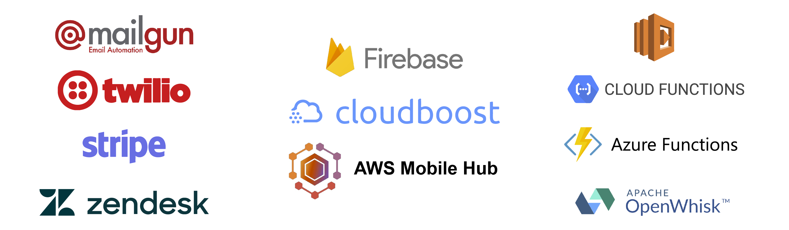
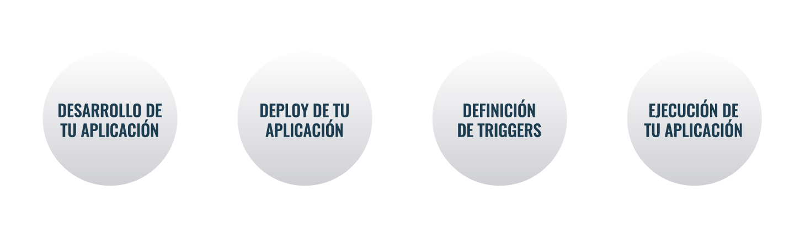

Zappa rocks on AWS
Hola…

Data Center Propio

Cloud Computing

Serverless

Qué es Serverless?
Es un modelo de ejecución en el cual el proveedor de cómputo administra dinámicamente la asignación de los recursos de la máquina.
El precio se basa en la cantidad real de recursos consumidos por una aplicación, en lugar de las unidades de capacidad adquiridas previamente.
From Wikipedia

SaaS vs BaaS vs FaaS

FaaS: Function as a Service
- Funciones de propósitos específicos
- Manejado por eventos
- Infraestructura abstracta
- Ambientes efímeros
- Se paga por los recursos consumidos
- Auto escalable
Cómo funciona FaaS?

Casos de Uso
- Web Backends
- Microservicios
- Bots
- Internet de las cosas (IoT)
- Streams y procesamiento de datos
- Tareas específicas
Beneficios
- Costos
- Cero mantenimiento de infraestructura
Limitaciones
- Tiempo de ejecución
- Asignación de memoria
- Tamaño de paquete
- Conexiones concurrentes
Python y FaaS
- AWS Lambda: Python 2.7, Python 3.6
- Google Cloud Functions: Python 2.7, Python >=3.4
- Microsoft Azure Functions: Python está en modo experimental.
- IBM Apache OpenWhisk: no soporta Python nativamente. Puede correr código customizado en un container de Docker.
Serverless Frameworks
Facilitan la configuración y el deploy de las aplicaciones 
Zappa
Aplicaciones python Serverless basadas en eventos
¡¡Incluyendo aplicaciones web WSGI!!
Features
- Aplicaciones Python WSGI
- Microservicios (Flask)
- Macroservicios (Django)
Más Features …
- Eventos en AWS (API Gateway/S3/Kinesis/DynamoDB/SNS/SES/Alexa/…)
- Tareas calendarizadas (Cron-like)
- Ejecución de tareas asincrónicas
- Múltiples Entornos (Environments)
Aún más …
- Certifcados SSL
- Invocación de Funciones Remotamente
- Logs
- Rollback
- Undeploy
…
- Compatibilidad con VPC
- Keep Warm
- Django Management Commands
- Disponibilidad global
- Variables de Entorno Remotas vía S3
- C-extensions vía lambda-packages y manylinux wheels
Instalación
$ pip install zappaConfiguración
$ zappa initzappa_settings.json
{
"dev": {
"app_function": "my_module.app",
"aws_region": "us-east-1",
"profile_name": "default",
"project_name": "zappa-project",
"runtime": "python3.6",
"s3_bucket": "zappa-bucket"
}
}zappa_settings.yml
dev:
app_function: my_module.app
aws_region: us-east-1
profile_name: default
project_name: zappa-project
runtime: python3.6
s3_bucket: zappa-bucketDeploy
$ zappa deploy dev
Deploying..
Your application is now live at: https://7k6anj0k99.execute-api.us-east-1.amazonaws.com/devMonitoreo
$ zappa tail dev --since 10m --filter "GET"Develop
$ zappa update dev
Updating..
Your application is now live at: https://7k6anj0k99.execute-api.us-east-1.amazonaws.com/dev
Rollback
$ zappa rollback dev -n 1Scheduling
{
"dev": {
...
"events": [{
"function": "your_module.your_function",
"expression": "rate(1 minute)"
}],
...
}
}$ zappa schedule dev$ zappa unschedule devY mucho más …
Let’s go rock
(Demo time)
¿Preguntas?
¡Muchas Gracias!